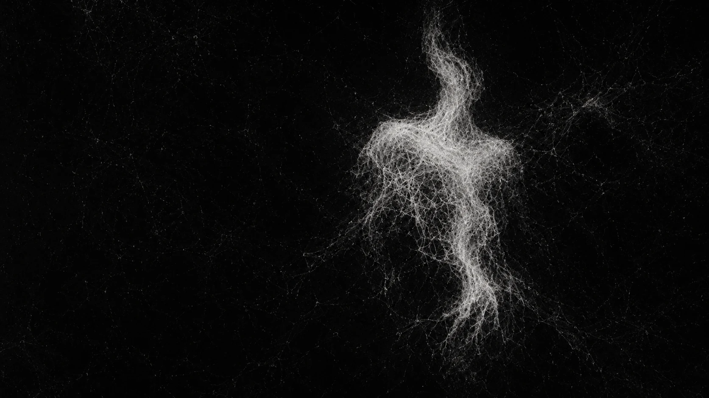

ÁLBUM IV / FANTASMA

Fantasmogênese
FANTASMA / forma sem forma
“O vidro respira. A forma falha. O arquivo ganha voz.”
Nada desaparece inteiro.
faixas
- 01Onde Se Guarda
- 02Frequência Distorcida
- 03Fantasmogênese
- 04Campo Nulo
- 05Baixa Resolução
- 06Dose de Impulso
- 07Ritual de Fogo
- 08Junho, De Novo